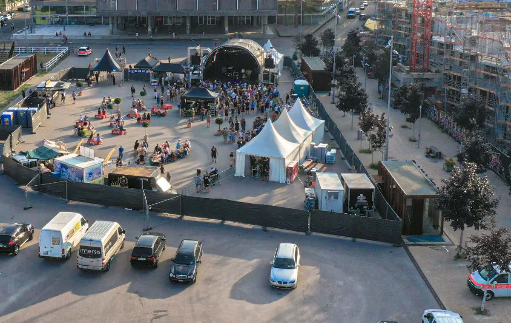

Asphalt
Conception, booking, directionEsplanade, BienneOpen air musical en ville
Un festival au milieu du béton. Le temps de l'open air, la grande esplanade entre le Palais des Congrès et la Coupole devient une salle de concert à ciel ouvert, avec une scène, des bars et des bancs au milieu de la ville.